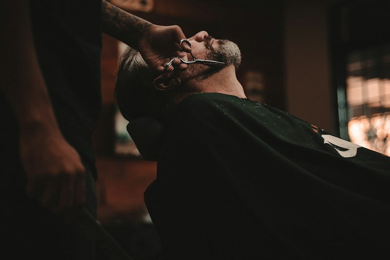

Palermo Soho · Sólo con turno
Cortes limpios.Degradados perfectos.
Ni de salón antiguo ni de peluquería rápida. Corte Urbano es tu estudio en Palermo Soho: fades precisos, perfiles a navaja, birra fría y barberos que entienden tu estilo.
Sacá tu turno por WhatsAppAtendemos con puntualidad. Sin esperas eternas.
Lo que hacemos
La pizarra
Precios de referencia. El platinado se cotiza en la consulta porque depende del largo y del estado del pelo.
-
Corte & Fade
$14.00045 minSkin fades, taper, mullet, buzz cut. Máquinas Wahl y Andis para transiciones sin marcas.
-
Barba Premium
$11.00030 minToalla caliente, aceite pre-shave, perfilado a navaja descartable y bálsamo hidratante.
-
Corte + Barba
$22.0001 h 15Los dos servicios en una sola sesión. Sale menos que por separado.
-
Platinados & Color
a cotizar2 a 4 hDecoloraciones globales, platinados blancos y colores fantasía, con protector de fibra capilar.
Efectivo, MercadoPago y débito. Los trabajos de color llevan seña al agendar.
Más que un corte
El ritual
Sabemos que venir a la barbería es tu momento de desconexión. El estudio está armado para eso.
- 01La barraCortate tomando una cerveza fría, un vermut o un buen café. Invita la casa.
- 02Sala de esperaSofás cómodos, PS5 y buena música urbana. Si llegás temprano, no molestás.
- 03Higiene estrictaNavajas de un solo uso abiertas frente a vos y máquinas desinfectadas entre cada cliente.

Antes de venir
Dudas frecuentes
¿Atienden por orden de llegada o con turno?
Sólo con turno previo. Respetamos tu horario a rajatabla: si sacaste a las 18:00, te sentás a las 18:00. Podés caer un rato antes para tomar algo en la barra.
¿Qué métodos de pago aceptan?
Efectivo, MercadoPago (transferencia o QR) y tarjetas de débito. Los trabajos largos como platinados requieren una seña simbólica al agendar.
¿Cuánto tengo que esperar para volver?
Un fade prolijo se nota a las tres semanas y pierde forma a las cinco. Si querés mantenerlo siempre al día, cada cuatro semanas es el punto justo.